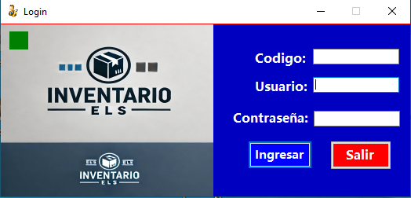
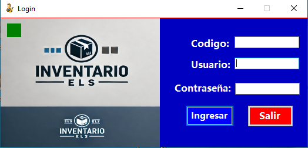
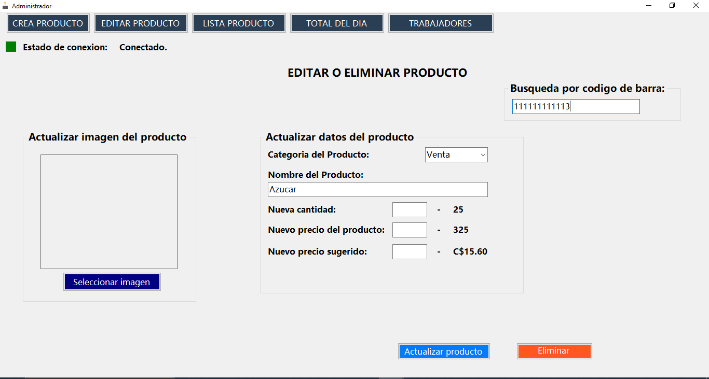
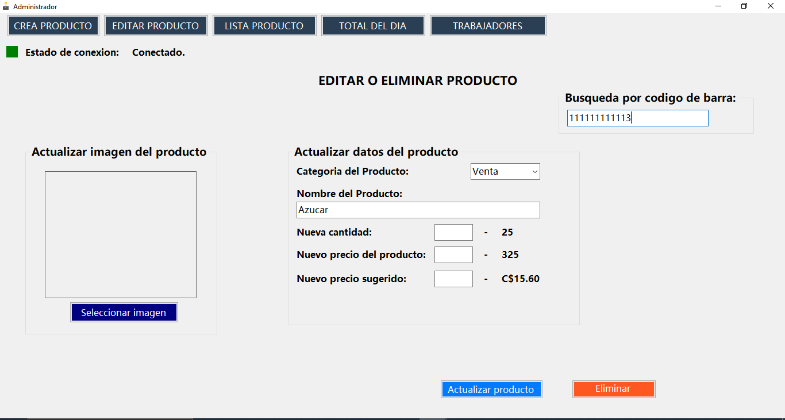
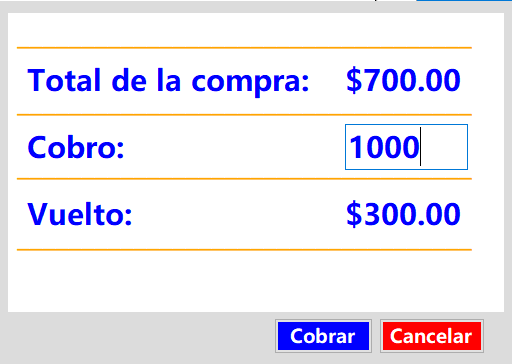
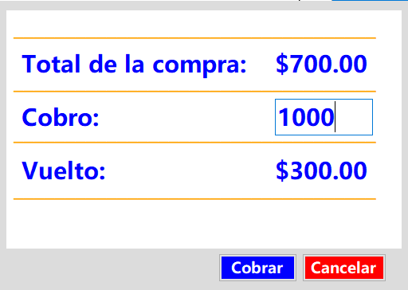

Sistema de Punto de Venta
Desarrollo de un sistema de gestión de ventas e inventario con bases de datos en MariaDB y SQL Server.
MariaDB
SQL Server
C#
Este sistema fue diseñado para agilizar los procesos de facturación, inventario y gestión de personal en pequeñas y medianas empresas. Utiliza una arquitectura robusta para garantizar la integridad de los datos y una interfaz de usuario intuitiva.
 


 


 
